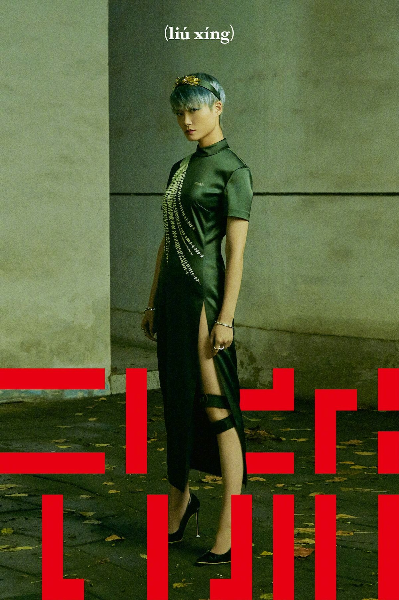

流行 - 李宇春
词：李宇春/Nick Atkinson曲：Justin Gray/Nick Atkinson
编曲：Justin Gray
制作人：Justin Gray
配唱制作人：郑楠
滤镜的色温 完美不热不冷
看戏的坐稳 我要打开流行之门
存在感加一 什么鬼都欲动蠢蠢
不分他她 直播里自由评论
玩儿摇滚的迷恋娱乐新闻
C位以待又一轮好戏纷呈
巨星订婚我已经阅后即焚
噹嘀哩噹噹嘀哩噹噹
Coz baby I'm the boss
Yeah baby I'm the boss
You can't brush it off
Coz baby I'm the boss
态度要虔诚 队形保持齐整
手机都举稳 玩儿命跟紧了脚后跟
同步更新 不要随便思考提问
不分他她 质疑者怎么永生
恋爱谈个价钱 钻钻钻
脸型换个爆款 燃燃燃
世界末日前高举双手狂欢
点赞
Coz baby I'm the boss
Yeah baby I'm the boss
You can't brush it off
Coz baby I'm the boss
You don't get to this for free
You ain't got the game to step to me
Kneel and kiss the ring on 123
Coz now you in the presence of a queen
Coz baby I'm the boss
Yeah baby I'm the boss
You can't brush it off
Coz baby I'm the boss
Boss
Boss
You can't brush it off
Coz baby I'm the boss

歌曲评论
| 野蛮生长 | 《流行》看似浅薄的歌词，故意为之的白描，唱出的你我司空见惯的种种“流行”。李宇春带着对自己以及时代和众人的拷问，探讨“流行”到底是什么。 在《流行》的整张专辑中，除主打歌《流行》外，还包含其他九首歌曲。曲风多元，内容各异，但都源于对现实生活的思考与感悟。 |
| 可怕 | 》看似浅薄的歌词，故意为之的白描，唱出的你我司空见惯的种种“流行”。李宇春带着对自己以及时代和众人的拷问，探讨“流行”到底是什么。 在《流行》的整张专辑中，除主打歌 |